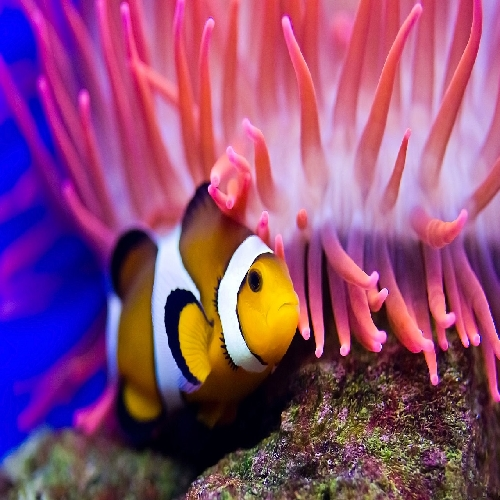

Number of items displayed is determined by parent container width.



You can predifine sizes with a modifier class. In this case it will be 50% width at a certain screen size.
Or just rely on a grid system. This is using bootstrap 3.
Use max-width on items to make them keep an ideal size even if there aren"t enough to fill the container.